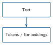
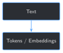

import sys
from pathlib import Path
BOOK_ROOT = Path(__file__).resolve().parents[2]
sys.path.insert(0, str(BOOK_ROOT / "code" / "chapter_01"))
from load_local_model import MODEL_NAME, load_model_and_tokenizer
OILFIELD_TERMS = ["POOH", "TOOH", "BHA", "WOB", "SPP", "RPM"]
PLAIN_TERMS = ["pipe", "hello", "drilling", "stuck"]
def tokenize_with_pieces(tokenizer, text: str) -> list[str]:
ids = tokenizer.encode(text, add_special_tokens=False)
return tokenizer.convert_ids_to_tokens(ids)
model, tokenizer = load_model_and_tokenizer(MODEL_NAME)
for term in OILFIELD_TERMS + PLAIN_TERMS:
pieces = tokenize_with_pieces(tokenizer, term)
print(f"{term!r:12} -> {len(pieces)} token(s): {pieces}")4 Tokenization and Embeddings for Domain Fine-Tuning


Progress ████░░░░░░░░░ 4 / 13 · Estimated time: 30-40 min · Difficulty: 🟠 Intermediate
4.1 Learning objectives
By the end of this chapter, you will be able to:
- Explain what a tokenizer actually does to text before the model ever sees it, and show it splitting real oilfield shorthand into pieces
- Explain what an embedding is, and the difference between a raw, per-token embedding and a whole-phrase (contextual) embedding
- Show, from a real run, whether the base model’s raw embeddings or a general-purpose sentence-embedding model recognize this book’s own oilfield acronyms as equivalent to their spelled-out meaning
- Explain why neither result is evidence the model is “broken” — and what it means for what fine-tuning (Chapter 5) actually has to fix
4.2 Operational Problem
Sean, the production engineer, pushes back on Chapter 1’s finding: “Sure, this small model didn’t know ‘trip out of hole’ — but ChatGPT and every other LLM I’ve used seem to handle abbreviations and jargon fine elsewhere. Isn’t that basically a solved problem by now?”
It’s a fair challenge, and answering it honestly means looking one layer lower than any question-and-answer test can show. Before a model generates anything, your text gets cut into pieces and looked up against a fixed table of numbers — and that happens the same way whether the model has seen your domain’s jargon a million times or never once. This chapter looks directly at that layer: what pieces this book’s oilfield shorthand actually gets cut into, and whether the numbers those pieces get looked up against already know anything about what that shorthand means.
4.3 Example training excerpt
A realistic instruction/response pair built the same way Chapter 2’s Drilling_038 examples were, using report shorthand exactly as written:
NoteSample training example
{
"instruction": "Summarize the operational risk in this report excerpt.",
"input": "0600-1130 POOH FR 9,842' TO CHANGE BHA. ERRATIC TORQUE OBSD LAST 3 STDS.",
"output": "Erratic torque over the last three stands before pulling out of hole suggests a developing hole-cleaning or BHA issue that should be monitored on the next run."
}POOH and BHA sit right in the input above. Before this chapter is over, you’ll know exactly how the model’s tokenizer splits both of those, and how close — if at all — its own numbers place them next to what they actually mean.
4.4 Theory
TipEngineering Translation: token
A token is the actual chunk of text a model reads — not necessarily a whole word. A tokenizer is the fixed rulebook that decides where those chunks break. It doesn’t know your domain, your abbreviations, or your intent; it just mechanically applies the same splitting rules to everything, the way a shipping label printer wraps text at a fixed column width whether or not that’s where a word actually ends.
TipEngineering Translation: vocabulary
A model’s vocabulary is the fixed list of pieces its tokenizer is allowed to produce — tens of thousands of them, decided once when the model was built and never updated by fine-tuning. If a term isn’t one whole piece on that list, it gets cut into smaller pieces that are.
TipEngineering Translation: embedding
An embedding is a list of numbers — a coordinate — that stands in for a token or a phrase, so the model can do math with meaning instead of with letters. Two coordinates being close together is supposed to mean “these mean similar things,” the same way two points close together on a map are supposed to mean “these places are near each other.” That promise only holds if the model actually learned to place them that way — nothing about having a coordinate guarantees it’s a good one.
4.5 Why “the model has seen jargon before” isn’t evidence
Sean’s instinct — that a language model trained on huge amounts of text has probably seen abbreviations and shorthand before — is reasonable. But “seen text like this somewhere” and “placed this specific term next to its specific meaning” are different claims, and only the second one matters for whether the model can answer a question about BHA correctly. This chapter tests the second claim directly, two ways: by looking at the model’s own raw, per-token embeddings, and by checking whether a dedicated, purpose-built sentence-embedding model — not this book’s small base model, something specifically designed to place similar meanings close together — does any better. Both results below are from real runs, not assumptions.
4.6 Implementation
4.6.1 Step 1: See exactly how the tokenizer splits oilfield shorthand
4.7 What problem are we solving?
Before asking anything about meaning, see the literal pieces the tokenizer produces — the raw material every later layer of the model has to work with.
4.8 Inputs
- The tokenizer loaded in Chapter 1 (
Qwen/Qwen2.5-1.5B-Instruct) - A handful of oilfield acronyms from this chapter’s example, plus a few ordinary English words for contrast
4.9 Expected Output
A token count and the exact pieces for each term.
Running this exact code prints:
'POOH' -> 2 token(s): ['PO', 'OH']
'TOOH' -> 2 token(s): ['TO', 'OH']
'BHA' -> 2 token(s): ['B', 'HA']
'WOB' -> 2 token(s): ['W', 'OB']
'SPP' -> 2 token(s): ['S', 'PP']
'RPM' -> 2 token(s): ['R', 'PM']
'pipe' -> 1 token(s): ['pipe']
'hello' -> 1 token(s): ['hello']
'drilling' -> 2 token(s): ['dr', 'illing']
'stuck' -> 2 token(s): ['st', 'uck']4.10 What just happened?
Every oilfield acronym split into exactly two arbitrary pieces — 'BHA' became 'B' + 'HA', with no more relationship to “bottom hole assembly” than those two letters carry on their own. But notice 'drilling' and 'stuck' split too, into pieces that are just as arbitrary ('dr' + 'illing', 'st' + 'uck') — so splitting itself isn’t a domain-jargon problem, it’s just how this tokenizer’s fixed vocabulary handles anything not common enough to earn its own whole token. 'pipe' and 'hello' happened to make the cut; 'BHA' didn’t.
4.11 Production Reality
This book’s tokenizer is fixed — it came with the base model and Chapter 5’s fine-tuning doesn’t change it. A production system dealing with truly nonstandard shorthand (a specific operator’s internal codes, say) sometimes trains or extends a custom tokenizer instead of just fine-tuning on top of a generic one; that’s a heavier, rarer move this book doesn’t cover, because for the vocabulary in this archive, as Step 2 shows next, the fix doesn’t need to happen at the tokenizer level at all.
4.11.1 Step 2: Check the base model’s own raw embeddings for these terms
4.12 What problem are we solving?
Tokenizing a term is not the same as the model understanding it. This step looks up the model’s own numeric coordinate for each piece, combines them into one vector per term, and measures how close an acronym’s vector is to its spelled-out meaning’s vector.
4.13 Inputs
- The loaded
modelfrom Step 1 (specifically,model.get_input_embeddings()) - Pairs of oilfield shorthand and their real meanings
4.14 Expected Output
A cosine similarity score for each pair — closer to 1.0 means “close together,” closer to 0 means “no relationship,” negative means “pointing away from each other.”
import torch
TERM_PAIRS = [
("POOH", "trip out of hole"),
("TOOH", "trip out of hole"),
("BHA", "bottom hole assembly"),
("BHA", "pizza delivery"),
("trip out of hole", "pull out of hole"),
]
def term_embedding(model, tokenizer, term: str) -> torch.Tensor:
ids = tokenizer.encode(term, add_special_tokens=False)
input_ids = torch.tensor([ids])
vectors = model.get_input_embeddings()(input_ids)[0]
return vectors.mean(dim=0)
def cosine_similarity(a: torch.Tensor, b: torch.Tensor) -> float:
return torch.nn.functional.cosine_similarity(a.unsqueeze(0), b.unsqueeze(0)).item()
for term_a, term_b in TERM_PAIRS:
vec_a = term_embedding(model, tokenizer, term_a)
vec_b = term_embedding(model, tokenizer, term_b)
print(f"{term_a!r:20} vs {term_b!r:20} -> {cosine_similarity(vec_a, vec_b):.3f}")Running this exact code prints:
'POOH' vs 'trip out of hole' -> 0.046
'TOOH' vs 'trip out of hole' -> 0.026
'BHA' vs 'bottom hole assembly' -> -0.035
'BHA' vs 'pizza delivery' -> -0.111
'trip out of hole' vs 'pull out of hole' -> 0.7094.15 What just happened?
The one pair that scored high — 'trip out of hole' vs. 'pull out of hole' — shares three of its four literal tokens ('out', 'of', 'hole'), so a high score there mostly reflects token overlap, not proof the model reasoned about synonyms. The real test is the acronym pairs, which share no tokens with their meanings: 'BHA' scored -0.035 against its own spelled-out meaning — statistically no relationship at all, and barely different from -0.111 against 'pizza delivery'. These raw, per-token embeddings are the model’s very first, static lookup table, before any contextual reasoning happens — and at that layer, an acronym and its meaning are strangers.
4.16 Production Reality
Raw input embeddings are the crudest possible measurement — a mean-pooled lookup with no context at all, nothing like how the model actually reasons once text moves through its attention layers during generation. A production system checking “does the model already know this term” would never stop at this layer. Step 3 checks a proper, purpose-built embedding model instead, to see if that changes the answer.
4.16.1 Step 3: Check a purpose-built sentence-embedding model too
4.17 What problem are we solving?
Maybe the problem is specific to this small base model’s raw embedding table, not embeddings in general. This step repeats the exact same comparison using sentence-transformers, a general-purpose model built specifically to place similar meanings close together — the same kind of tool Chapter 9’s retrieval system will use.
4.18 Inputs
- The same
TERM_PAIRSfrom Step 2 sentence-transformers’all-MiniLM-L6-v2model (downloaded once, then cached)
4.19 Expected Output
The same style of cosine similarity scores, from a different, dedicated embedding model.
from sentence_transformers import SentenceTransformer
st_model = SentenceTransformer("all-MiniLM-L6-v2")
for term_a, term_b in TERM_PAIRS:
vec_a, vec_b = st_model.encode(term_a), st_model.encode(term_b)
sim = float(
torch.nn.functional.cosine_similarity(
torch.tensor(vec_a).unsqueeze(0), torch.tensor(vec_b).unsqueeze(0)
)
)
print(f"{term_a!r:20} vs {term_b!r:20} -> {sim:.3f}")Running this exact code prints:
'POOH' vs 'trip out of hole' -> 0.249
'TOOH' vs 'trip out of hole' -> 0.167
'BHA' vs 'bottom hole assembly' -> 0.115
'BHA' vs 'pizza delivery' -> 0.128
'trip out of hole' vs 'pull out of hole' -> 0.7474.20 What just happened?
A real, dedicated embedding model does slightly better on 'POOH' (0.249, up from 0.046) — some improvement, though still a weak score for two phrases that mean exactly the same thing. But 'BHA' barely moved, and not in the direction that matters: 0.115 against its own meaning versus 0.128 against 'pizza delivery' — the unrelated phrase still scores higher. A general-purpose embedding model, built by people who never saw this archive, has no more reason to know that BHA means “bottom hole assembly” than the base language model did.
4.21 Practical exercise
🟢 Beginner
Try it yourself: run python code/chapter_04/tokenize_and_embed.py from inside book/, then pick two more terms from Drilling_038’s excerpt above (OBSD, STDS, FR) and check how they tokenize.
You’ll know it worked when: you can point to the exact pieces each term splits into, and explain in one sentence why a short acronym isn’t necessarily “safe” from being split, even though it’s already short.
4.22 Field notes
WarningField notes: a blowout preventer scores lower than a birthday party
Query: how closely does each embedding approach place BOP (the industry-standard abbreviation for blowout preventer, a critical well-control safety device, appearing 36 times across this book’s 9 drilling reports) next to its own meaning — compared to an unrelated phrase, "birthday party"?
Result:
| Comparison | Raw input embedding | Sentence embedding |
|---|---|---|
BOP vs. "blowout preventer" |
0.131 |
0.059 |
BOP vs. "birthday party" |
-0.105 |
0.320 |
Why: the safest claim this result supports is the direct one — neither embedding approach encodes the equivalence between BOP and “blowout preventer” strongly enough for this task. Exactly why the sentence-embedding model happens to place "birthday party" closer is not something these two numbers prove on their own (this chapter doesn’t inspect the model’s internals to confirm a specific cause); what they do prove is that whatever 0.320 is picking up on, it isn’t domain understanding of well control.
Lesson: a safety-critical abbreviation is exactly the kind of term where “the embedding space probably has this covered” is the most dangerous assumption to make casually. Neither this chapter’s raw embeddings nor a real, dedicated embedding model can be trusted with your domain’s specific vocabulary out of the box. (Reproduce this yourself with code/chapter_04/challenge/challenge.py, below.)
4.23 Challenge exercise
🟠 Intermediate
Challenge: extend the comparison to real acronyms pulled from this book’s own archive instead of hand-picked examples — BOP (blowout preventer) and TVD (true vertical depth), both genuinely present across the 9 drilling reports (36 and 32 times respectively, on a real count). A reference solution is at code/chapter_04/challenge/challenge.py — on a real run, TVD vs. "true vertical depth" scores 0.024 raw / 0.118 sentence-embedding, in the same range as this chapter’s other acronym pairs, and the same run’s count_term_occurrences() reproduces both counts above (and the Field Notes’ 36 for BOP) directly from the archive.
4.24 Key takeaways
- A tokenizer mechanically splits text into fixed pieces from a vocabulary decided when the model was built — it has no awareness of your domain, and fine-tuning doesn’t change it.
- Splitting into multiple pieces isn’t unique to jargon — plenty of ordinary English words split too. The real question is whether the resulting pieces get placed anywhere near their meaning.
- Raw, per-token embeddings are the model’s crudest, first-layer lookup — a real run shows this book’s oilfield acronyms placed no closer to their own meanings than to an unrelated phrase.
- A dedicated, purpose-built sentence-embedding model does only marginally better, and for at least one safety-critical term (
BOP) actually favors an unrelated phrase. Off-the-shelf embeddings, of either kind, cannot be assumed to already understand your domain’s specific shorthand.
4.25 Repository files
| File | Purpose |
|---|---|
code/chapter_04/tokenize_and_embed.py |
Tokenizes oilfield terms and compares raw vs. sentence-embedding similarity |
code/chapter_04/challenge/challenge.py |
Reference solution: real archive acronyms (BOP, TVD) |
notebooks/chapter_04_explore.ipynb |
Interactive companion notebook |
CautionCHECKPOINT — Chapter 4
Tip✓ WHAT YOU BUILT
tokenize_and_embed.py — inspects tokenization and compares two kinds of off-the-shelf embeddings against this book’s own oilfield shorthand, with real, reproducible numbers showing neither reliably understands it. This is the concrete evidence for why Chapter 5 has to actually update the model’s weights, not just hope a bigger embedding model would fix it.
4.26 What can you do now that you couldn’t do before?
You can show, with real numbers instead of intuition, exactly what a model reads before it ever generates a word — and you have direct, reproducible evidence that off-the-shelf embeddings, of any kind, can’t be assumed to already understand your operation’s specific shorthand.
4.27 Suggested next step
Coming up in Chapter 5: tokenization and embeddings are the fixed starting material every chapter until now has quietly relied on. Chapter 5 is where that finally changes — your first LoRA fine-tune, which updates the model’s own weights using Chapter 2’s 16 training examples, then reruns Chapter 3’s training baseline and its held-out check against Drilling_037 to see, honestly, how much actually improved.